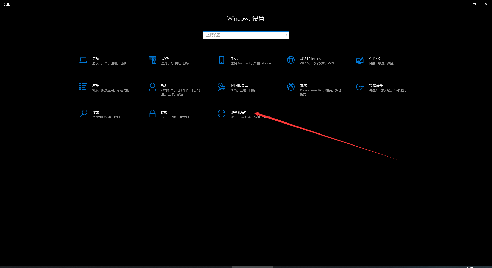
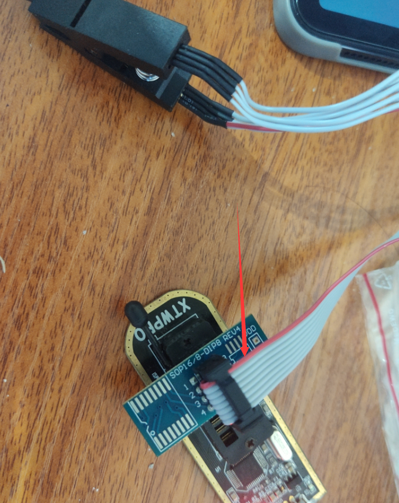

使用编程器刷显卡BIOS
简介
昨天晚上记录如何刷显卡BIOS的时候，原本以为我刷的BIOS是可以用的，后面重启后起不来了，黑屏了，于是有了这篇《如何使用变成器刷显卡BIOS》
首先我们需要准备的有编程器一个，测线夹一个。
我这里使用的编程器是XTW100，某宝上十多块，连测线夹一起三十左右，系统是windows10。
开始
安装编程器驱动
禁用驱动程序强制签名
我们首先安装编程器驱动，编程器的驱动需要关闭win10的强制验证签名才能安装。
打开电脑的【设置】
打开【更新和安全】

点击【恢复】
点击【高级启动】下的【立即重新启动】
重启之后选择【疑难解答】
选择【高级选项】
选择【启动设置】
选择【重启】
在此重启后按【F7】选择【禁用驱动程序强制签名】
安装驱动
首先把编程器插入电脑
在桌面上【右键】【此电脑】，选择【管理】
点击【设备管理器】
找到【其他设备】下的【WinUSBcomm Device】，右键【WinUSBcomm Device】，选择【更新驱动程序】
选择【浏览我的电脑以查找驱动程序】
点击【浏览】
找到商家给的驱动程序文件夹并选中，然后点击【确定】
点击【下一步】
选择【始终安装此驱动程序软件】
安装成功后点击【关闭】并且关掉设备管理窗口
找到显卡BIOS芯片
拆开显卡，找BIOS芯片，BIOS芯片是8脚的，并且型号上一般都是带有24或者是25的，例如我的显卡的BIOS芯片型号是PM25LD010，这就是带有25的，如果不确定的话可以百度一下自己的显卡上的8脚芯片，百度上看到的是存储芯片一般就是BIOS芯片了。
刷入BIOS
找到BIOS芯片之后就可以开始刷入BIOS了
把测线夹连接编程器，测线夹红线为1脚，编程器靠拉杆的为1脚

打开【编程器】的软件
可以看到软件已经检测到编程器连接了，如果没有检测到就拔掉编程器在从新插入
把测线夹夹到芯片上，注意不要夹反了，芯片上有一个点的那个脚为芯片的1脚，测线夹红色的线是1脚，第1脚要对第1脚
在编辑器上选择芯片的型号，如果没有找到自己的芯片型号可以选择相近的型号试试，或者直接上某宝问问编程器卖家同一型号的变成器能不能刷你的芯片，如果他说可以，那你就说没在芯片列表里面看到你的芯片，这时候一般都会和你说用那个兼容的型号来刷了

选择好型号后点击【读出芯片】
选择【擦除芯片】
点击【打开】，找到需要刷入的BIOS
然后选中需要输入的显卡BIOS文件，并且点击【打开】载入文件，如果在自己存放显卡BIOS的文件夹里面没有看到BIOS，那么改下文件类型看看
载入BIOS文件后点击【写入芯片】开始写入BIOS
写入完成后在点击一次【读出芯片】，看看写入的文件和刚刚打开的文件的内容一样不一样，或者是直接点击【校验芯片】进行校验，如果校验没错那么就是写入成功了
写入完成后就可以端口测线夹上机测试看看是否可以开机了。
注意
注意测线夹别夹反了或者是夹不到位
还有一点就是有的显卡需要插入电源才能写入，我的就是需要接入电源才可以写入，之前不知道在这写了半天就是写不进去，后面把显卡接入电源后就成功写入了
结尾彩蛋
本博客所有文章除特别声明外，均采用 CC BY-SA 4.0 协议 ，转载请注明出处！